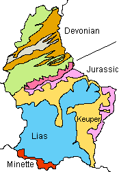

Geology of Luxembourg
|  |
| Image: simplified geologic map of Luxembourg. |
Luxemburg is divided into two very different parts.
The north is called the Eisleck or Oesling and is composed mainly of densely forested highlands. This is a part of the Ardennes plateau, up to 550m asl high and the highest part of Luxembourg. It is composed of 400 Million years old Devonian schists and quarzites. This area is influenced by an old orogenesis and the layers are folded. They fall with approximately 45°. The Eisleck covers about a thrid of the country.
The southern two thirds of Luxembourg are called Gutland, the Good Land. The reason is the different geography, lowlands with rolling hills and patches of forest, dedicated mostly to farming and viticulture. This landscape is a result of a much different geologic situation. This area is composed of sedimentary rocks of the Trias and Jurassic, between 220 and 150 Million years old, much younger than the Devonian north. This are limestones, sandstones, dolomites and a little gypsum, which are more or less horizontal. They are the continuation of the geologic unit of the Rhenohercynicum in Germany.
The oldest rocks, redish sandstones of the Buntsandstein, or Lower Triassic, are found at the border to the Eisleck to the north. A little to the south and along the river Moselle to the east, they are covered by limestones and dolomites of the Muschelkalk or Middle Triassic. The Keuper or Upper Triassic is formed by dolomites and marls and follows to the south and west. The central part of Luxembourg is covered by the sandstones, marls and dark bituminous oil shale of the Lias or Lower Jurassic. At this time the Thetis, the ancestor of todays Mediterranean, was very low in oxigene and the dead bodies of the animals were not completely decomposed, but impregnated the sediment with various hydrocarbons. This layers are sometimes very rich in fossils. The city of Luxembourg is built on Lias sandstones.
The youngest layers of this series, the sandstones and conglomerates of the beginning Dogger or Middle Jurassic are found along the the southern border of the country. They are locally called Minette, and contain several layers of iron ore. All around central Europe iron rich layers were deposited during this period, there are oolithic iron ores of Wasseralfingen in southern Germany or the conglomerates of Schacht Konrad in Northern Germany. But the Minette is probably the most important and rich deposit of iron ores from this period.
Although there are mostly sediments covering the country, and most of them are limestones or dolomites, the country of Luxembourg only has a single cave system. It is rather long, but the passages are narrow and very low, and it is not open to the public. The limestones are often karstified, but without caves. This is the reason why no show caves are listed for Luxembourg, there are none. But the Minette is an important iron mining area with a showmine, and there is also a copper mine open to the public. The rather soft sandstones below Luxembourg city were used to build casemattes, so there are some subterranea too.
- See also
 Search Google for "Geology of Luxembourg"
Search Google for "Geology of Luxembourg" Looking at Luxembourg
Article from the February 2003 issue of €u(ro)ck, by Phil Marston, Photo by Kirsty Crocket.
Looking at Luxembourg
Article from the February 2003 issue of €u(ro)ck, by Phil Marston, Photo by Kirsty Crocket.- The Luxembourg Weekend
- Geology of the Luxembourg Ardenne (Eisleck)
- Centre Europeen de Geodynamique et de Seismologie (European Center for Geodynamics and Seismology)
- Service Géologique
- Association Géologique du Luxembourg
- Musée national d'histoire naturelle, Luxembourg
(ecology, geophysics, geology, mineralogy, paleontology)